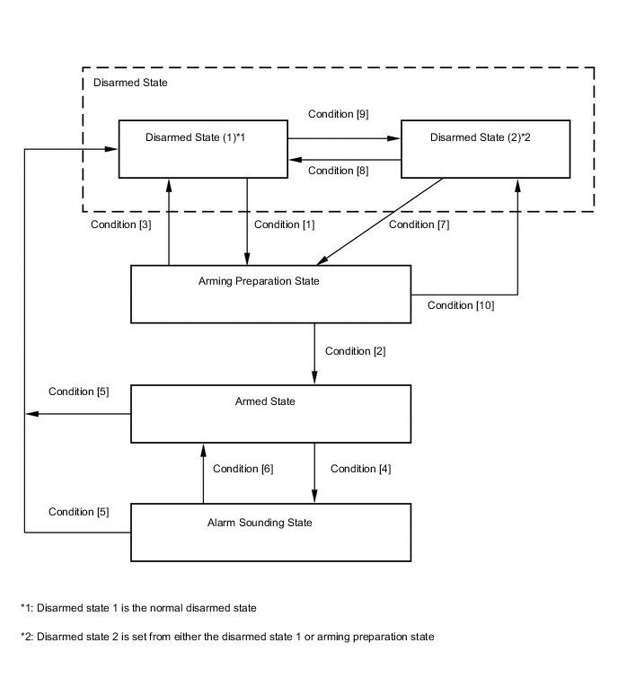
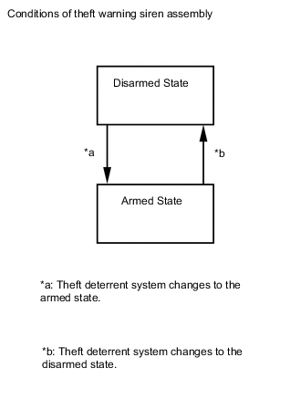
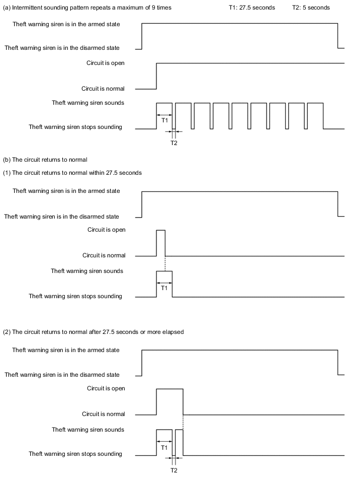

OUTLINE OF THEFT DETERRENT SYSTEM
The theft deterrent system can be set by locking the doors using any of the following operations:
Entry lock operation
Wireless lock operation
Key linked lock operation
Opening and closing the doors
Tech Tips
| Vehicles not Displaying the Item "Security control with mechanism key" on the GTS | Vehicles Displaying the Item "Security control with mechanism key" on the GTS | |
|---|---|---|
| Entry lock operation | ○ | ○ |
| Wireless lock operation | ○ | ○ |
| Key linked lock operation | ○ | - |
| Opening and closing the doors | ○ | - |
○: Available
-: Not Available
In the armed state, the alarm function will be activated if one of the following conditions is met:
Any of the doors is unlocked.
Any of the doors or the engine hood is opened.
The intrusion sensor (theft warning ultrasonic sensor) detects movement inside the cabin.*
The back door glass or back window fix glass is broken.*
*: w/ Intrusion Sensor
In the alarm sounding state, the system blinks the turn signal lights. At the same time, the system sounds the vehicle horns and theft warning siren assembly to deter break-in and theft as well as to warn people around the vehicle.
The theft deterrent system can be canceled by unlocking the doors using any of the following operations:
Entry lock operation
Wireless lock operation
Key linked lock operation
Tech Tips
| Vehicles not Displaying the Item "Security control with mechanism key" on the GTS | Vehicles Displaying the Item "Security control with mechanism key" on the GTS | |
|---|---|---|
| Entry lock operation | ○ | ○ |
| Wireless lock operation | ○ | ○ |
| Key linked lock operation | ○ | - (○)* |
*: This function is set through the customize function.
○: Available
-: Not Available
The theft deterrent system has an active arming mode. There are 4 states in this mode; a disarmed state, an arming preparation state, an armed state and an alarm sounding state.
Disarmed state:
The alarm function is not operating.
The theft deterrent system is not operating.
Arming preparation state:
The time until the system goes into the armed state.
The theft deterrent system is not operating.
Armed state:
The theft deterrent system is operating.
Alarm sounding state:
The alarm function is operating.
| Alarm Method | Turn Signal Lights | Blinking |
| Vehicle Horns | Sounding (Approximately 0.4-second cycles) |
|
| Theft Warning Siren Assembly | Sounding |
FUNCTION OF MAIN COMPONENTS
| Component | Function |
|---|---|
| Security indicator light | Informs driver of theft deterrent system status. |
| Theft warning siren assembly | Sounds when attempted break-in or theft is detected. |
| Turn signal lights | Blink when attempted break-in or theft is detected. |
| Vehicle horns | Sound when attempted break-in or theft is detected. |
|
Detects door status (open or closed). |
| Door unlock detection switch | Detects door status (locked or unlocked). |
| Engine hood courtesy switch (Hood lock assembly) | Detects engine hood status (open or closed). |
| Intrusion sensor cancel function* |
|
| Intrusion sensor* | Sends a signal to the main body ECU (multiplex network body ECU) to sound the alarm when detecting an intrusion. |
| Glass breakage sensor* | Sends a signal to the main body ECU (multiplex network body ECU) to sound the alarm when detecting breakage of back door glass or back window fix glass. |
| Certification ECU (Smart key ECU assembly) |
|
*: w/ Intrusion Sensor
ACTIVE ARMING MODE
Active arming mode:
This system operates as described in the diagram below when one of the items for each condition is met.
Tech Tips
The term "all doors" used in this section refers to the driver door, front passenger door, rear door LH, rear door RH and back door.

| Condition | Item |
|---|---|
| Condition [1] | In disarmed state 1, when the power switch is turned off, the system state is changed if the following condition is met:
In disarmed state 1, when the power switch is off, the engine hood is closed and all doors are locked, the system state is changed if the following condition is met:
|
| Condition [2] |
|
| Condition [3] |
|
| Condition [4] |
|
| Condition [5] |
|
| Condition [6] |
|
| Condition [7] |
|
| Condition [8] |
|
| Condition [9] | In disarmed state 1, when the power switch is turned off, the system state is changed if the following condition is met:
In disarmed state 1, when the power switch is off, the engine hood is open and all doors are locked, the system state is changed if the following condition is met:
|
| Condition [10] |
|
| Condition | Item |
|---|---|
| Condition [1] | In disarmed state 1, when the power switch is turned off, the system state is changed if the following condition is met:
|
| Condition [2] |
|
| Condition [3] |
|
| Condition [4] |
Note Ultrasonic waves are used to detect intrusion. Ultrasonic waves do not penetrate steel or glass. If any of the windows is left open, ultrasonic waves may escape. This may result in the detection of people in the surroundings, leaves or insects entering the vehicle, strong wind or other ultrasonic wave sources in the environment when the vehicle is parked with the windows open. When parking the vehicle with the windows open for ventilation, turn off the intrusion sensor (theft warning ultrasonic sensor) using the intrusion sensor cancel function.* |
| Condition [5] |
|
| Condition [6] |
|
| Condition [7] |
|
| Condition [8] |
|
| Condition [9] | In disarmed state 1, when the power switch is off, the system state is changed if the following condition is met:
|
| Condition [10] |
|
*: w/ Intrusion Sensor
FORCED DOOR LOCK CONTROL
The forced door lock control prevents the vehicle from being tampered with. Immediately after a door is unlocked (armed state), all doors are forced to lock by a forced door lock signal.
If the following conditions are met, the forced door lock control is operated.
The theft deterrent system is in the armed state.
Any door is unlocked.
PANIC ALARM CONTROL (w/ Panic Switch)
Panic alarm control makes it possible to voluntarily set off the panic alarm by pressing the panic switch on the electrical key transmitter sub-assembly.
Conditions that cause panic alarm control to set off the panic alarm:
The panic switch on the electrical key transmitter sub-assembly is pressed under the following conditions:
The power switch is off.
The theft deterrent system is not in the alarm sounding state.
Conditions that cause the panic alarm control to shut off the alarm:
Any of the following conditions is met during panic alarm control operation:
The power switch is turned on (IG).
The panic switch is pressed again.
Any of the switches on the electrical key transmitter sub-assembly (lock/unlock) is pressed.
The panic alarm ends (approximately 27.5 seconds have elapsed).
The theft deterrent system switches to the alarm sounding state. Under this condition, the theft deterrent system controls the alarm rather than the panic alarm control. In order to cancel this alarm, refer to the theft deterrent system alarm sounding state cancellation procedure.
INTRUSION SENSOR (THEFT WARNING ULTRASONIC SENSOR) (w/ Intrusion Sensor)
Note
Ultrasonic waves are used to detect intrusion. Ultrasonic waves do not penetrate steel or glass. If any of the windows is left open, ultrasonic waves may escape. This may result in the detection of people in the surroundings, leaves or insects entering the vehicle, strong wind or other ultrasonic wave sources in the environment when the vehicle is parked with the windows open. When parking the vehicle with the windows open for ventilation, turn off the intrusion sensor (theft warning ultrasonic sensor) using the intrusion sensor cancel function.
The main body ECU (multiplex network body ECU) activates the intrusion sensor (theft warning ultrasonic sensor) when the system changes from the disarmed state to the arming preparation state. If an intrusion detection signal is input from the intrusion sensor (theft warning ultrasonic sensor) while in the armed state, the main body ECU (multiplex network body ECU) changes to the alarm sounding state in order to output an alarm.
When the theft deterrent system is in the disarmed state, the intrusion sensor (theft warning ultrasonic sensor) can be disabled through the settings screen on the multi-information display.
The intrusion sensor (theft warning ultrasonic sensor) may erroneously detect intrusion in the following situations:
Persons or pets are in the vehicle.
The vehicle is parked in a place where extreme vibrations or noises occur, such as in a parking garage.
Ice or snow is removed from the vehicle, causing the vehicle to receive repeated impacts or vibrate.
The wind or something similar causes an externally mounted reflectively coated windshield cover to move.
The intrusion sensor (theft warning ultrasonic sensor) may react to a hanger or other objects hanging in the cabin if they drop or swing.
The system changes to the armed state even if any of the windows is open. The intrusion sensor (theft warning ultrasonic sensor) may react to objects moving outside the vehicle when any of the windows is open.
The vehicle is inside an automatic or high-pressure car wash.
The vehicle experiences impacts, such as hail, lightning strikes and other kinds of repeated impacts or vibrations.
CHECK INTRUSION SENSOR (THEFT WARNING ULTRASONIC SENSOR) (w/ Intrusion Sensor)
Turn the power switch off.
Make sure all of the windows and doors and the engine hood are closed.
Lock all of the doors through wireless operation or the entry lock function and check that the security indicator light illuminates (system changes to the arming preparation state).
Approximately 30 seconds after locking all of the doors through wireless operation or the entry lock function, check that the security indicator light is blinking (system is in the armed state). Then, check that the alarm function operates (system changes to the alarm sounding state) due to movement inside the vehicle.
Tech Tips
If the electrical key transmitter sub-assembly is within an exterior detection area, the intrusion sensor (theft warning ultrasonic sensor) will not operate.
Perform an unlock operation using the wireless or entry operation to stop the alarm.
CHECK INTRUSION SENSOR CANCEL FUNCTION (w/ Intrusion Sensor)
Turn the power switch off.
Make sure all of the windows and doors and the engine hood are closed.
Enter the settings screen on the multi-information display and disable the intrusion sensor (theft warning ultrasonic sensor).
Lock all of the doors through wireless operation or the entry lock function and check that the security indicator light illuminates (system changes to the arming preparation state).
Approximately 30 seconds after locking all of the doors through wireless operation or the entry lock function, check that the security indicator light is blinking (system is in the armed state). Then, check that the alarm function does not operate (system does not change to alarm sounding state) due to movement inside the vehicle.
Tech Tips
Even if the intrusion sensor (theft warning ultrasonic sensor) is off, the theft deterrent system will be in the armed state. Therefore, if any of the doors is manually unlocked, the alarm will operate.
If the electrical key transmitter sub-assembly is within an exterior detection area, the intrusion sensor (theft warning ultrasonic sensor) will not operate.
GLASS BREAKAGE SENSOR (w/ Intrusion Sensor)
The main body ECU (multiplex network body ECU) detects breakage of the glass breakage sensor (back door glass or back window fix glass). If the main body ECU (multiplex network body ECU) detects breakage of the glass breakage sensor (back door glass or back window fix glass) while the theft deterrent system is in the armed state, it will sound the alarm for 27.5 seconds.
THEFT WARNING SIREN ASSEMBLY
The theft warning siren assembly has an internal battery. If power to the theft warning siren assembly is interrupted or the communication line is open, the theft warning siren assembly detects it and sounds the alarm using the internal battery.
The theft warning siren assembly has the following alarm controls: normal alarm control and open circuit alarm control. Under normal alarm control, the alarm sounds based on instructions from the main body ECU (multiplex network body ECU) whereas under open circuit alarm control, the theft warning siren assembly judges current security conditions and sounds the alarm by itself.
Normal alarm control
The theft warning siren assembly sounds when the theft deterrent system is in the alarm sounding state and does not sound when the system is not in the alarm sounding state.
Tech Tips
If the communication between the theft warning siren assembly and main body ECU (multiplex network body ECU) is continuously interrupted for 70 seconds or more while the theft deterrent system is in the alarm sounding state, the theft warning siren assembly will stop sounding.

Open circuit alarm control
The theft warning siren assembly changes between the disarmed state and armed state in accordance with the change of the theft deterrent system between the disarmed state and armed state. If the power source, ground or communication line becomes open while the theft warning siren assembly is in the armed state, the theft warning siren assembly will sound.
During the open circuit alarm sounding state, the theft warning siren assembly sounds intermittently for 27.5 seconds and then stops for 5 seconds. This pattern repeats a maximum of 9 times.
This intermittent sounding will stop when either of the following conditions is met:
1. The theft warning siren assembly changes to the disarmed state.
2. The circuit returns to normal.

SECURITY INDICATOR LIGHT OUTPUT
According to the state of the theft deterrent system, the main body ECU (multiplex network body ECU) outputs a signal to turn the security indicator light on. However, some of the actual lighting conditions of the security indicator light are different from the output signals of the main body ECU (multiplex network body ECU).
| State of Theft Deterrent System | Security Indicator Light | |
|---|---|---|
| Output Signal from Main Body ECU (Multiplex Network Body ECU) | Actual Lighting Condition | |
| Disarmed state (1), (2) | Off |
|
| Arming preparation state | On | On |
| Armed state | Off | Blinking |
| Alarm sounding state | On | On |
| Time | Security Indicator Light |
|---|---|
| 0.125 sec. | On |
| 1.875 sec. | Off |
Tech Tips
When the immobiliser system is set, the security indicator light blinks during both the disarmed state and the armed state due to output signals from the immobiliser system.